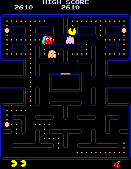

Pacman

Overview
This is a full Pac-Man recreation — ghosts, pellets, power-ups, lives, score, the works. The constraint that makes it interesting: no canvas API, no game frameworks, no libraries. Pure JavaScript, rendered entirely through the DOM using absolutely positioned elements and CSS transforms. It sounds like a minor restriction until you realise the browser is not a game engine, and making it behave like one at 60 frames per second requires understanding exactly how browsers draw.
The 60fps Problem
A game that stutters is broken regardless of how correct the logic is. 60fps means 16.6ms per frame — that's your entire budget for game logic, DOM updates, and anything else the browser needs to do. Miss it consistently and the game feels wrong.
The rendering pipeline in a browser goes: JavaScript → Style recalculation → Layout → Paint → Composite.
Each stage takes time, and you have almost no direct control over the later ones.
What you can control is how much you force the browser to do at each stage.
Reading a DOM element's position mid-frame (getBoundingClientRect, offsetTop)
triggers a synchronous layout recalculation — a forced reflow — that can blow the frame budget instantly.
I learned this the hard way: my first implementation ran at 30fps because it was triggering reflows
on every game entity every frame.
The fix was strict separation of read and write phases. All position reads happen at the start of
the frame; all DOM writes happen at the end. The browser can batch the writes and
compute layout once. Combined with requestAnimationFrame to sync with the display
refresh cycle and CSS transform (which composites on the GPU without triggering layout),
the frame rate locked to 60fps consistently.
Game Architecture
The game loop runs on a fixed timestep: each requestAnimationFrame callback
accumulates elapsed time and steps the simulation in fixed 16ms increments, then renders.
This separates game logic from rendering frequency — if a frame takes slightly longer than 16ms
to draw, the simulation doesn't drift. It's the same pattern used in professional game engines.
The map is a 2D tile grid. Each cell is either a wall, a pellet, a power pellet, a tunnel, or empty. Pac-Man and the ghosts maintain a logical tile position that drives collision detection, and a visual pixel position that gets interpolated between tiles for smooth motion. This dual representation — logical grid for game rules, continuous coordinates for rendering — is standard in tile-based games and prevents the jittery movement you get if you move strictly tile-to-tile without interpolation.
Ghost AI
Each of the four ghosts uses a different targeting strategy, loosely based on the original arcade behaviours. Blinky targets Pac-Man's current tile directly. Pinky targets four tiles ahead of Pac-Man's facing direction. The others use variations on proximity and flanking logic. In scatter mode, each ghost retreats to a fixed corner; the transition between chase and scatter modes creates the characteristic rhythm of the game.
Pathfinding for ghost movement uses BFS on the tile grid each frame — finding the shortest route to the target tile while respecting walls and the rule that ghosts cannot reverse direction spontaneously. BFS on a small grid (the Pac-Man maze is roughly 28×31 tiles) is fast enough to run for all four ghosts every frame within budget.
Challenges
Collision detection between Pac-Man and ghosts in a DOM context was the source of most bugs. Tile-based collision is conceptually simple — check if two entities occupy the same tile — but the visual interpolation between tiles means an entity's rendered position doesn't match its logical tile position mid-move. Getting the collision window right (when exactly a collision should trigger) required careful tuning to feel fair without being frustrating.
The tunnel wrap-around — Pac-Man exiting the left edge and appearing on the right — needed special handling both for the logical tile position and for the interpolated visual position. A naive implementation produces a visible jump across the screen mid-animation.
Performance remained a moving target throughout. Every time I added a new game element,
I'd re-profile in Chrome DevTools to check the flame chart. Common offenders were
unnecessary DOM queries inside the game loop, accidental layout invalidation,
and opacity animations triggering paint rather than composite. The final version
holds a clean 60fps profile with no layout or paint in the critical path — everything
that moves uses transform and opacity only.
What I Took Away
Building a game is a different kind of hard to building a web app. The feedback loop is tighter — you feel performance problems immediately — and the correctness bar is higher, because wrong behaviour is visible rather than just incorrect data in a response. This project gave me a deep practical understanding of the browser rendering pipeline that I carry into every frontend project I work on. When something is slow, I know where to look.